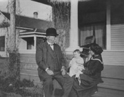

Margaret Scott Cook (Taylor)
Husband:
Taylor, Jack
Father:
Cook, William Hough, Sr.
Brother:
Cook, William Hough, Jr.
Son:
Taylor, John Spencer

(3) 1898, c.
(2) 1903, about
1921/06/16
(2) 1931, about